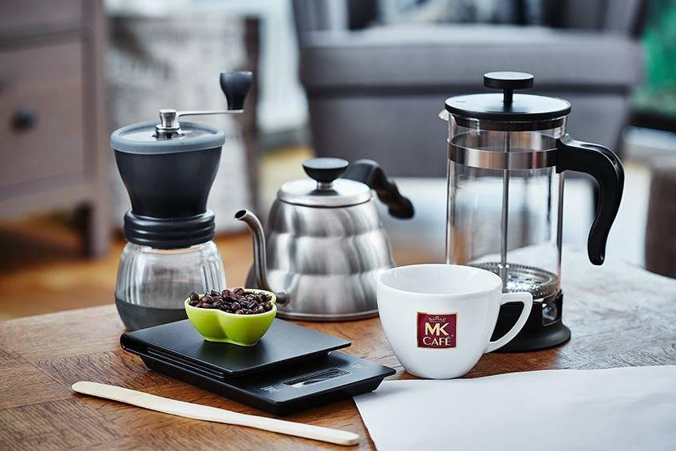
01
Prensa francesa
Recipiente de vidrio o acero inoxidable con émbolo y filtro metálico.
Descubre cómo transformar café, agua y tiempo en una experiencia extraordinaria utilizando la prensa francesa.
Una preparación sencilla que permite descubrir toda la personalidad del café.
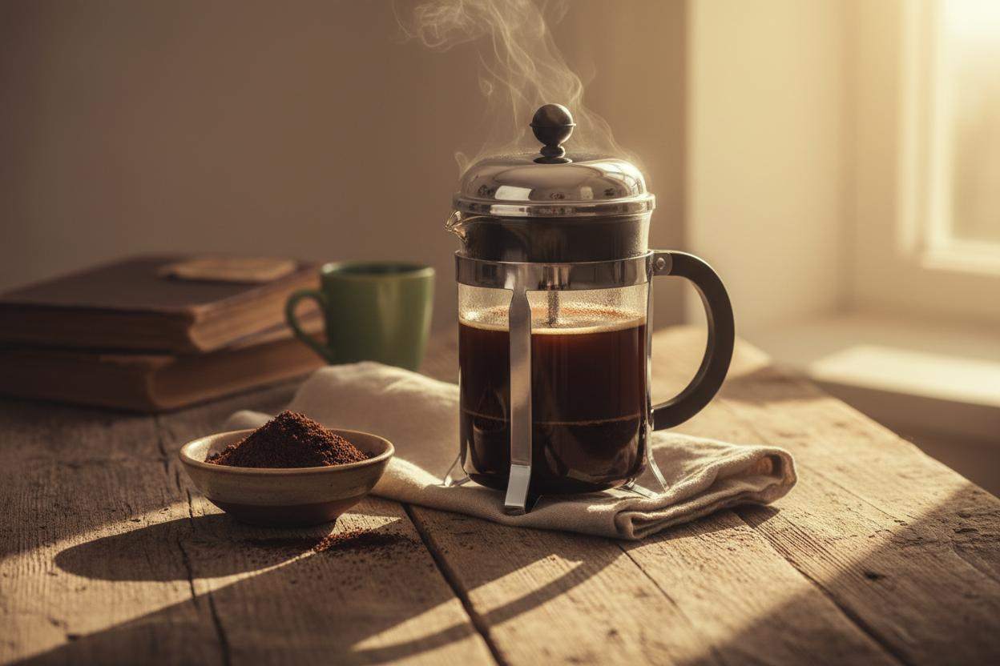
La prensa francesa (French Press) es un método de preparación por inmersión completa. Consiste en mezclar café molido con agua caliente y permitir que ambos permanezcan en contacto durante un tiempo determinado.
Posteriormente, un filtro metálico separa el líquido del café molido, conservando parte de sus aceites naturales y proporcionando una bebida de cuerpo intenso.
La calidad de cada elemento influye en el resultado final.

Recipiente de vidrio o acero inoxidable con émbolo y filtro metálico.
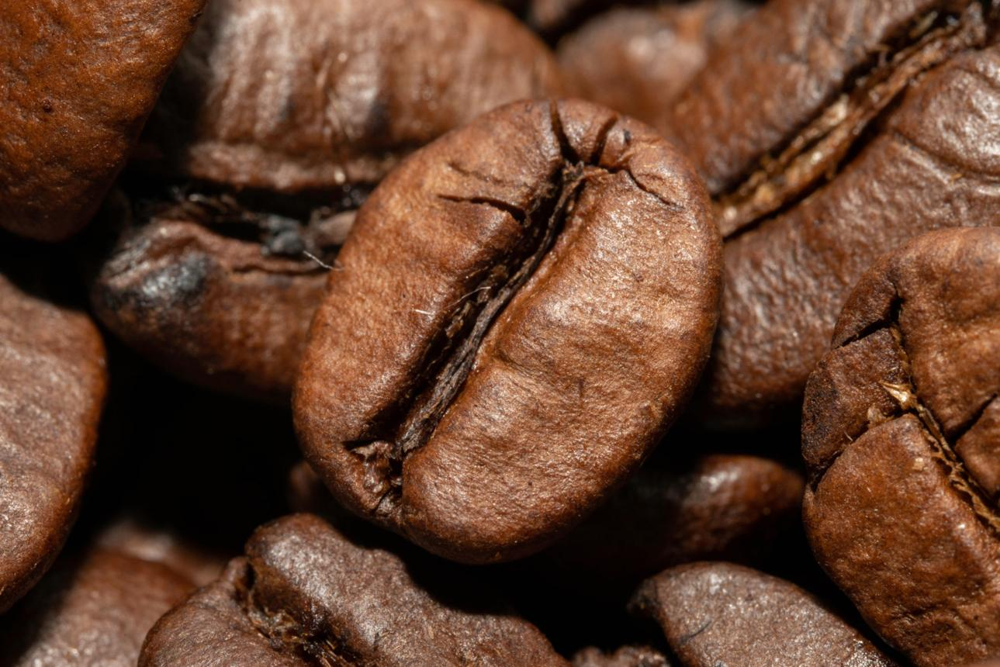
Preferiblemente café fresco, de buena calidad y recién tostado.
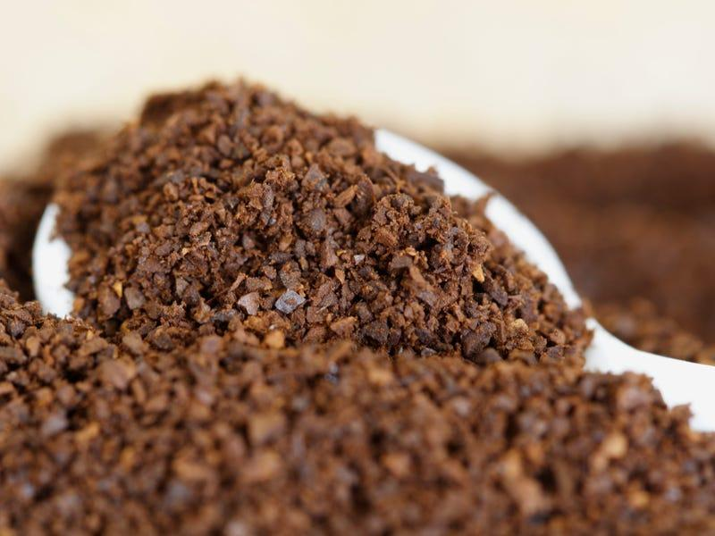
Permite obtener una molienda gruesa y uniforme.
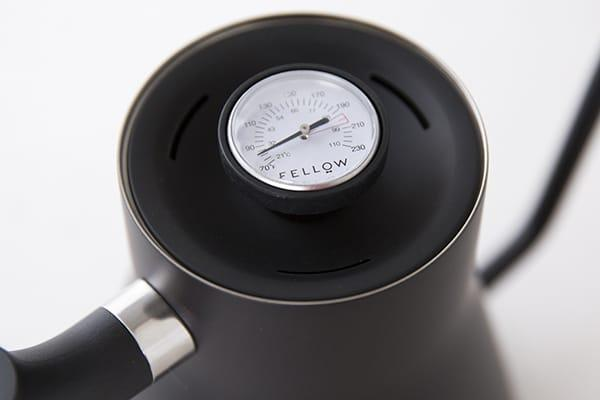
Agua limpia y control de temperatura para una extracción equilibrada.
Diez principios fundamentales para mejorar cada preparación.
Muele los granos justo antes de preparar el café para conservar mejor sus aromas.
Utiliza una molienda gruesa y relativamente uniforme para facilitar la filtración.
Utiliza agua limpia, sin sabores ni olores que interfieran con el perfil del café.
Trabaja con agua entre 90 y 96 °C, ajustando según el café utilizado.
Comienza con una relación aproximada de 1:15, es decir, una parte de café por quince de agua.
Humedece todo el café y permite liberar los gases acumulados durante el tostado.
Utiliza un tiempo inicial de referencia de aproximadamente cuatro minutos.
Mezcla suavemente para favorecer una extracción uniforme.
Desciende el émbolo lentamente, sin forzarlo ni agitar los sedimentos.
Traslada el café a otra jarra o sírvelo inmediatamente para evitar que continúe extrayéndose.
Un procedimiento controlado desde la molienda hasta el servicio.
Muele los granos hasta obtener una textura gruesa y uniforme.
Grind Size: Coarse
Calienta el agua a una temperatura aproximada de 90 a 96 °C.
Water Temperature: 90–96 °C
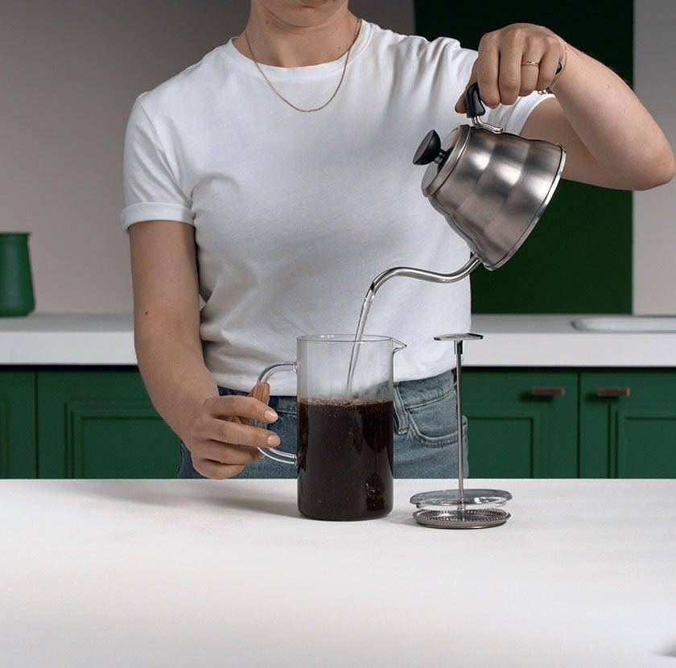
Añade el agua sobre el café procurando humedecer toda la molienda.
Initial Pour
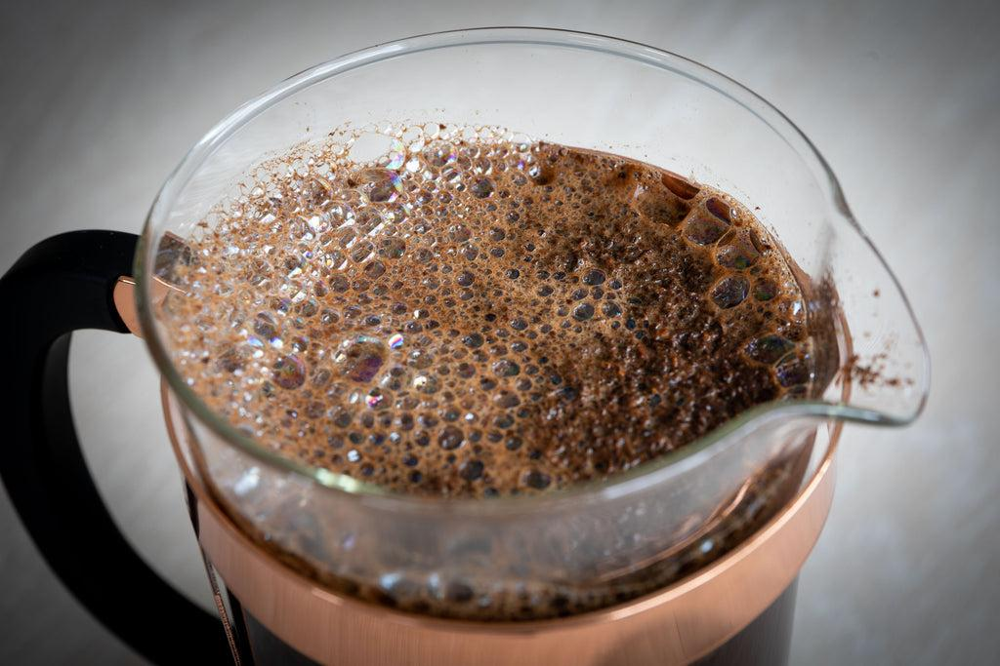
Deja reposar brevemente el café para favorecer la liberación de gases.
Bloom: 30–45 seconds
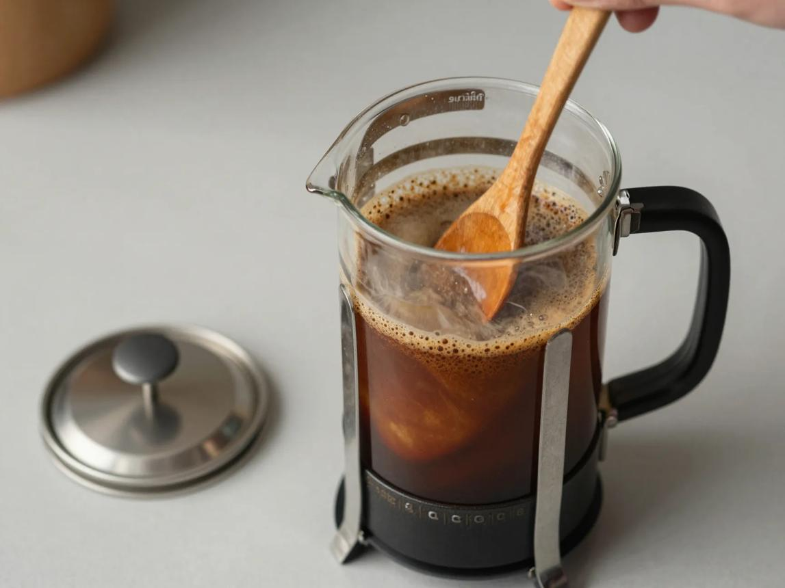
Realiza una agitación controlada para favorecer el contacto entre agua y café.
Gentle Stirring
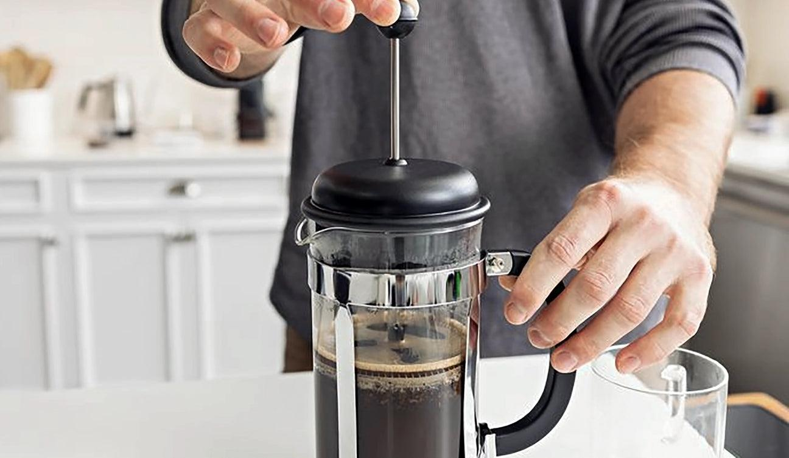
Coloca la tapa y baja el émbolo de manera lenta y uniforme.
Gentle Plunge
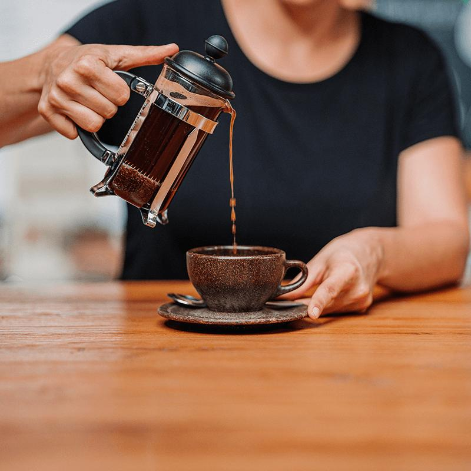
Sirve inmediatamente en una taza o jarra limpia para detener la extracción.
Serve Immediately
Parámetros orientativos para ajustar la preparación según el resultado.
| Variable | Referencia inicial | Objetivo |
|---|---|---|
| Molienda | Gruesa | Filtración uniforme |
| Temperatura | 90–96 °C | Extracción equilibrada |
| Proporción | 1:15 | Balance general |
| Preinfusión | 30–45 segundos | Liberación de gases |
| Extracción | 4 minutos aprox. | Desarrollo de sabor |
| Presión | Suave | Separación de sedimentos |
Prueba reducir ligeramente la temperatura, acortar el tiempo o utilizar una molienda algo más gruesa.
Evalúa aumentar ligeramente la extracción, ajustar la temperatura o utilizar una molienda algo más fina.
Considera aumentar la dosis de café o ajustar la proporción de preparación.
Los parámetros son puntos de partida. Ajusta según el origen, tostado, frescura y características de cada café.
Cada región aporta características propias que podemos descubrir mediante la prensa francesa.
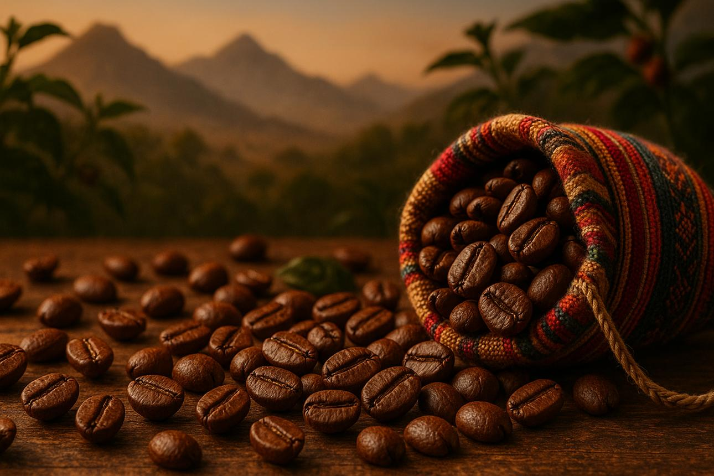
Puede presentar perfiles con notas de chocolate, frutos secos, caramelo y acidez equilibrada, dependiendo de la región y el procesamiento.
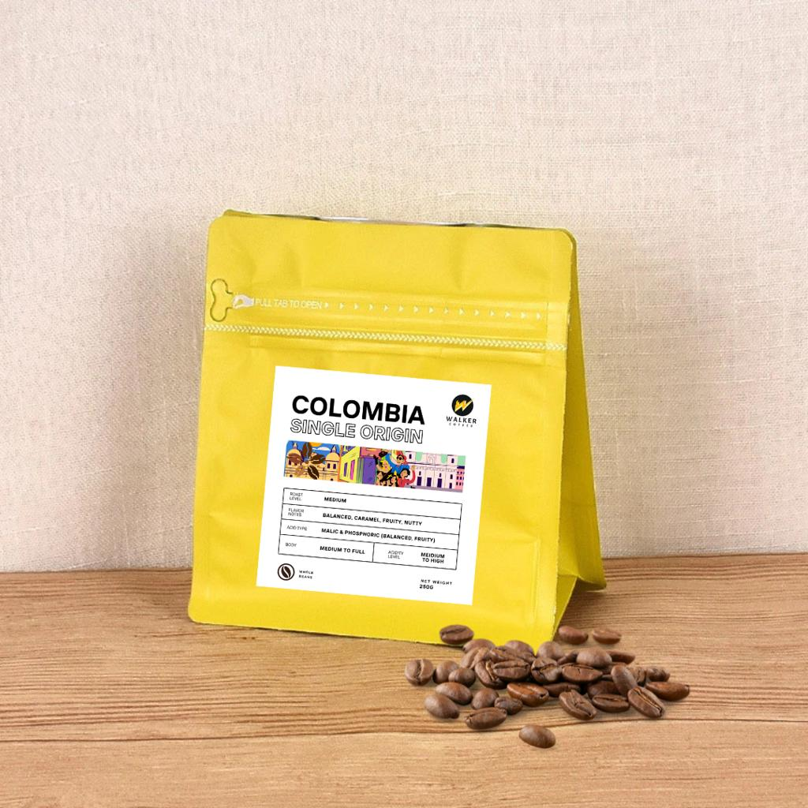
Destaca por su diversidad de perfiles, con posibles notas frutales, dulces, cítricas y de caramelo.
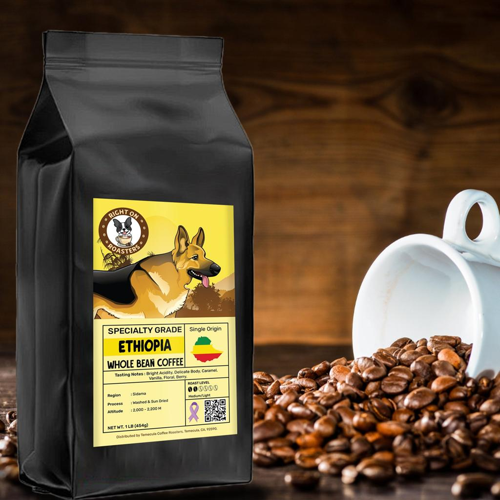
Algunos cafés presentan perfiles florales, cítricos, frutales y aromáticos, con gran diversidad según su proceso.
Calcula la cantidad de café y agua según tu preparación.
La relación inicial recomendada es 1:15. Puedes modificarla según tus preferencias.
Tu preparación está lista para comenzar.
Mantén el control de cada segundo durante la preparación.
Tiempo de referencia: cuatro minutos. Ajusta el proceso según el café utilizado.
Una receta de referencia para preparar dos tazas de café mediante inmersión.
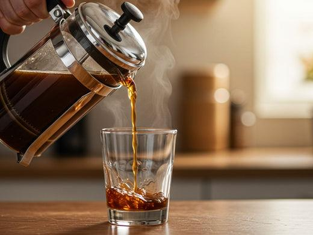
Marca cada paso a medida que completas tu preparación.
Preparar café en prensa francesa es una combinación de técnica, paciencia y experimentación.
No existe una única receta perfecta para todos los cafés. Cada origen, tostado y molienda puede requerir pequeños ajustes.
Utiliza esta guía como punto de partida, experimenta con las variables y descubre tu propio perfil de sabor.
GOOD COFFEE TAKES TIME.